Replacing Shaft Seal for Input Flange on Final Drive
33 11 021 - Replacing shaft seal for input flange on final drive

Special tools required:
- 00 5 010 00 5 010 Universal Puller
- 00 5 500 00 5 500 Handle for Drifts
- 23 0 020 23 0 020 Holder
- 23 1 300 23 1 300 Fixture
- 23 1 302 23 1 300 Fixture
- 23 1 303 23 1 300 Fixture
- 31 2 101 31 2 100 Fixture
- 31 2 102 31 2 100 Fixture
- 31 2 103 31 2 100 Fixture
- 31 2 104 31 2 100 Fixture
- 33 1 150 33 1 150 Fixture
- 33 1 341 33 1 340 Fixture
- 33 3 390 33 3 390 Drift
- 33 3 440 33 3 440 Drift
- 33 3 470 33 3 470 Drift
- 33 3 480 33 3 480 Drift
- 33 3 490 33 3 490 Drift

Important!
Use only approved gear oils.
Failure to comply with this instruction will result in serious damage to the rear differential!

Necessary preliminary tasks:
- Remove propeller shaft from rear differential drive flange Removing and Installing Propeller Shaft (Cardan Universal Joint) Completely, remove complete propeller shaft if necessary
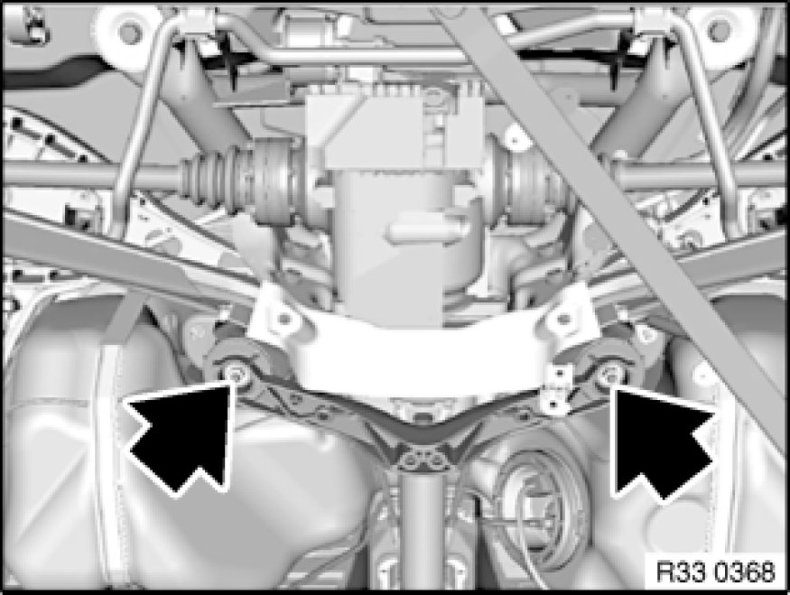
Removing drive flange:
Support rear axle carrier at front middle with workshop jack.
Release nuts and remove compression strut.
Installation Note:
Replace self-locking nuts.
Tightening torque 33 33 3AZ Rear Axle Suspension.
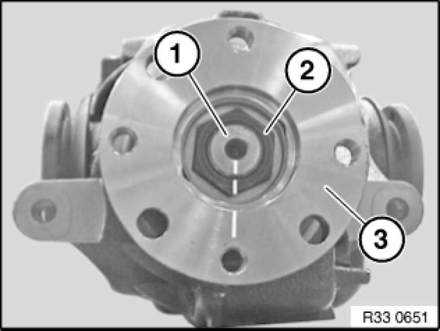
Important!
Before releasing collar nut, mark drive flange (3) and collar nut (2) to drive shaft (3) with center punch or color marker pen.
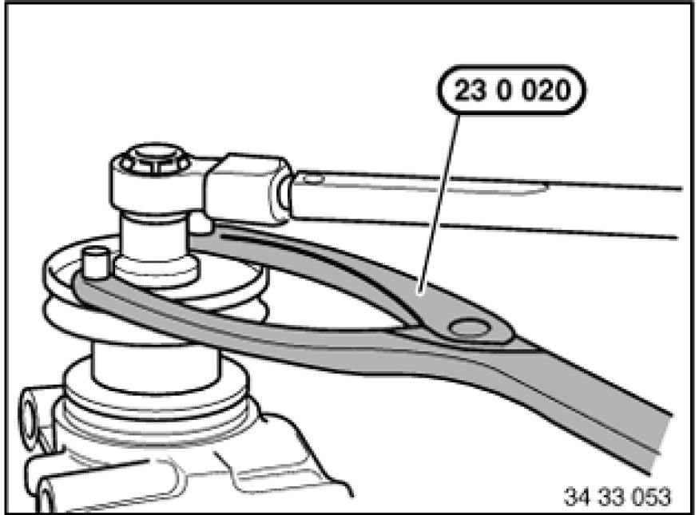
Brace drive flange with special tool 23 0 020 23 0 020 Holder and release collar nut.
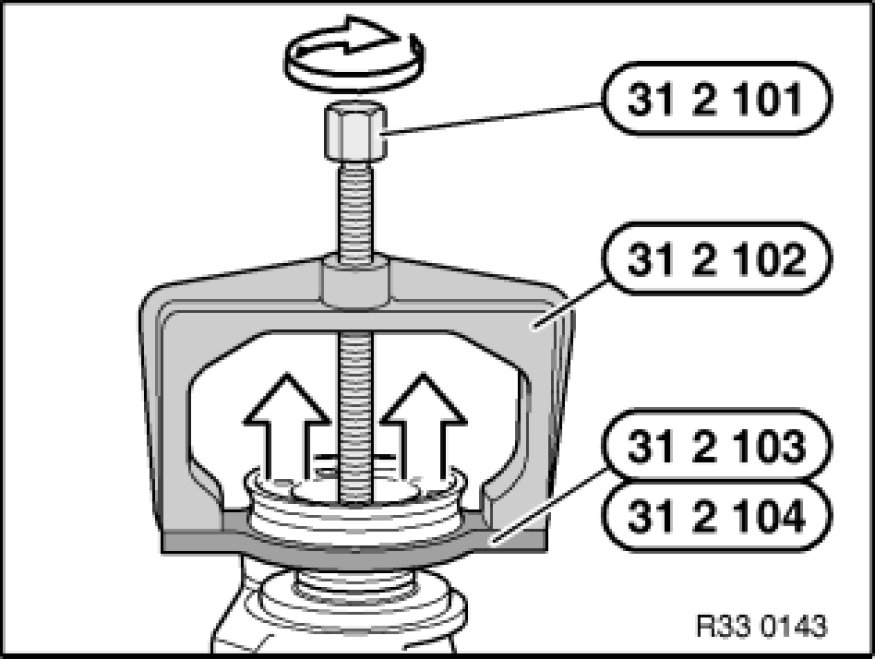
Note:
Read and comply with document "Rear differential: Assignment to model series Application and ID".
210 with lock, 215K:
Remove drive flange with special tools 31 2 101 31 2 100 Fixture, 31 2 102 31 2 100 Fixture, 31 2 103 31 2 100 Fixture / 31 2 104 31 2 100 Fixture.
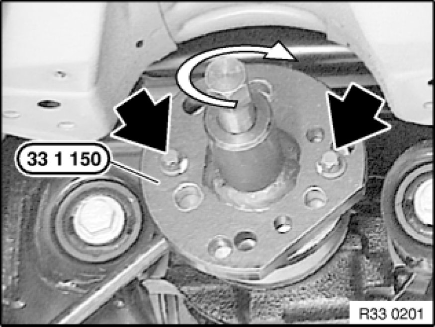
168K/L, 188K/L:
Remove drive flange with special tool 33 1 150 33 1 150 Fixture.
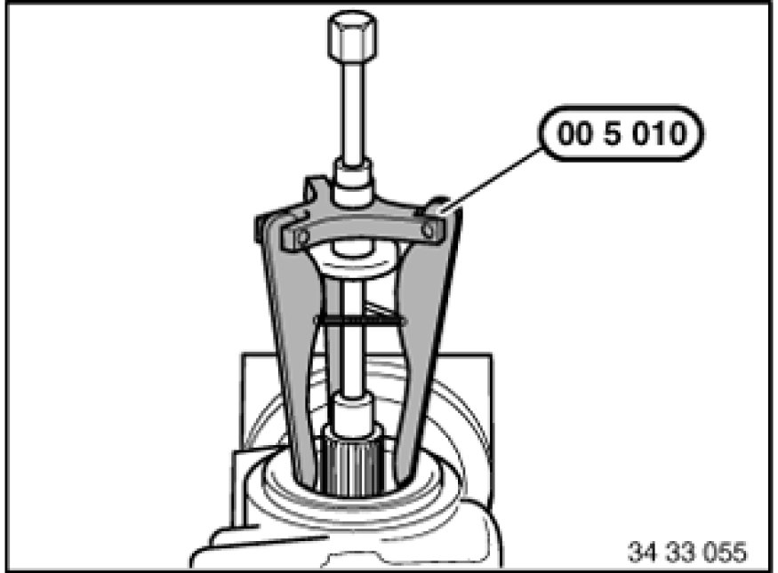
Replacing shaft seal:
Withdraw shaft seal with special tool 00 5 010 00 5 010 Universal Puller.
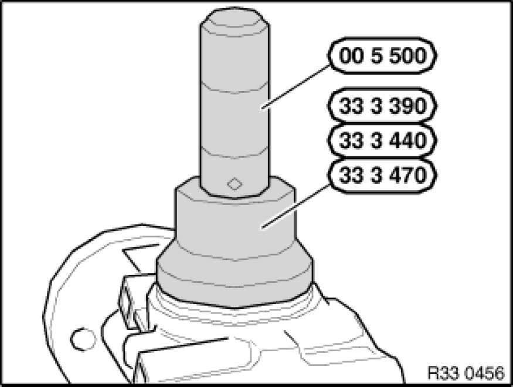
Drive in new shaft seal with following special tools (depending on rear differential Application and ID) as far as it will go.
- 168K/L: Use special tools 00 5 500 00 5 500 Handle for Drifts and 33 3 390 33 3 390 Drift
- 188K/L: Use special tools 00 5 500 00 5 500 Handle for Drifts and 33 3 470 33 3 470 Drift
- 210 with lock, 215K: Use special tools 00 5 500 00 5 500 Handle for Drifts and 33 3 440 33 3 440 Drift
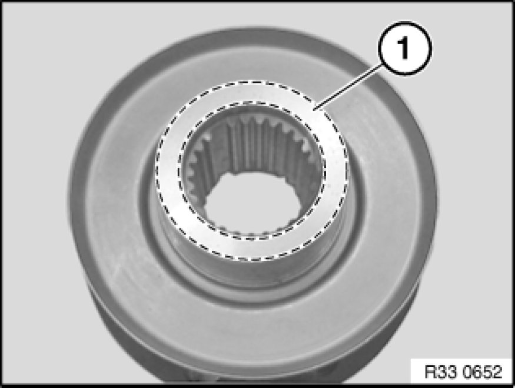
Important!
Clean end face (1) of drive flange and apply a thin coating of grease.
Note:
Failure to comply with this instruction will result in the generation of noise in the rear differential.
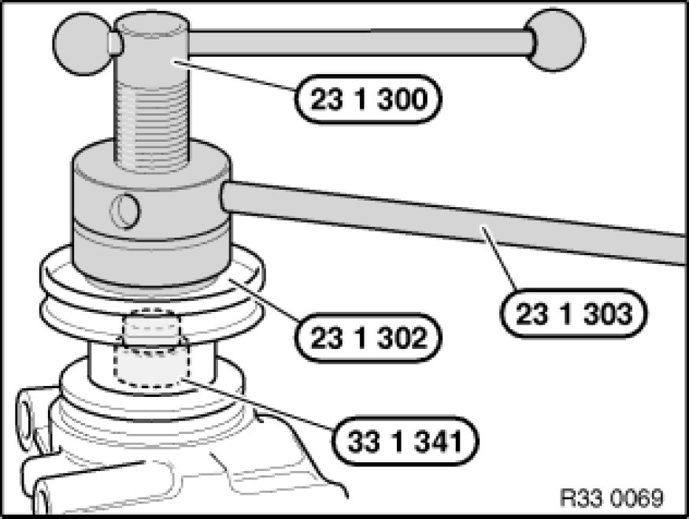
Installing drive flange:
Coat sealing lips of shaft seal and sealing surface of drive flange with differential oil.
Attach drive flange as per marking.
Press on drive flange with special tools 23 1 300 23 1 300 Fixture, 33 1 341 33 1 340 Fixture and 23 1 303 23 1 300 Fixture, if necessary 23 1 302 23 1 300 Fixture until collar nut can be screwed on.
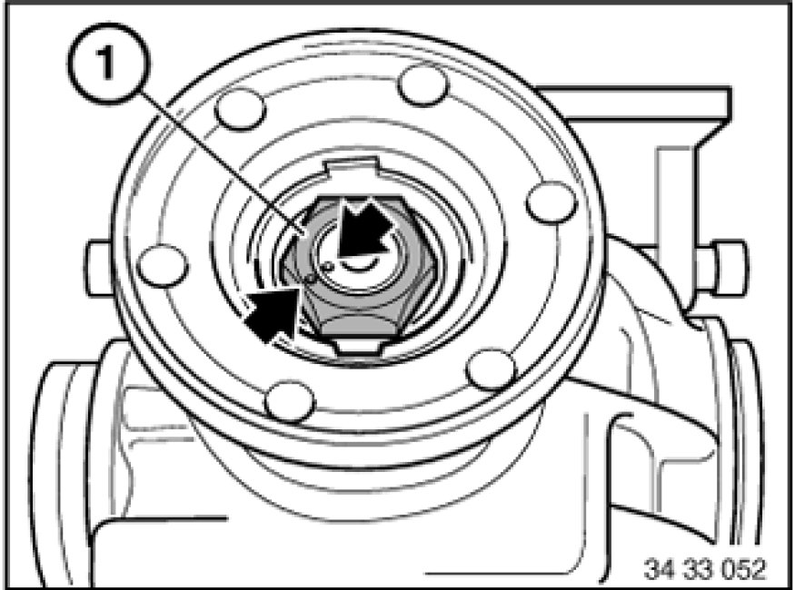
Important!
Do not under any circumstances tighten down collar nut beyond marker points in order to avoid damaging the clamping sleeve.
Tighten down collar nut (1) to point where marker points are aligned.
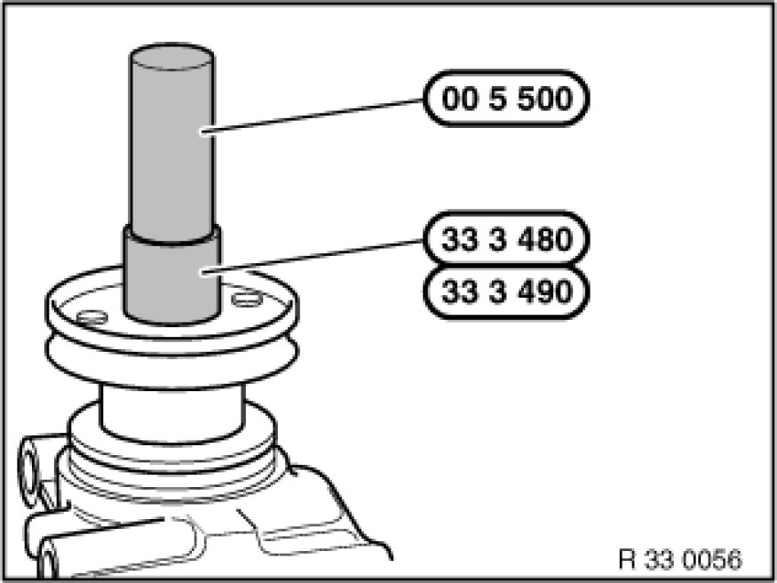
Drive in new retaining plate with following special tools (depending on rear differential Application and ID) as far as it will go.
- 168K/L, 188K/L: Use special tools 00 5 500 00 5 500 Handle for Drifts and 33 3 480 33 3 480 Drift
- 210 with lock, 215K: Use special tools 00 5 500 00 5 500 Handle for Drifts and 33 3 490 33 3 490 Drift
After installation:
- Differentials 168K up to 03/03, 188K, 210 with lock only: Change rear differential oil Oil Change in Rear Differential incl. Used Oil Disposal
- Differentials 168K from 03/03, 168L to 188L only: Correct rear differential fluid level Checking/Topping Up Oil Level in Rear Differential